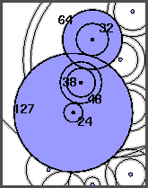
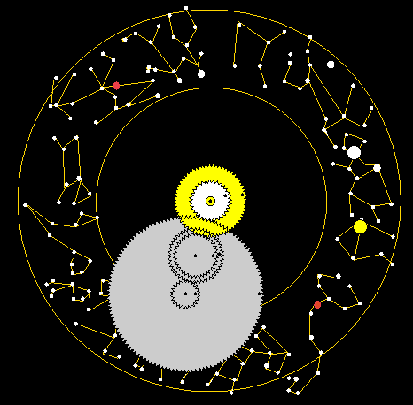

With Java animations by Bill Casselman
These two images give a schematic version of De Solla Price's general gear plan; on the right the color picks out the sub-assembly connecting the sun's motion to that of the moon.
The sun marker and the moon marker were driven by the two central gears (the moon axis threaded through the sun's), exactly like the hour and minute hands on a modern clock. The train of gears linking the sun's motion to that of the moon can be described by the meshing pattern and the numbers of teeth.
|  |
The sun gear has 64 teeth. It meshes with the smaller of a
38,48 gear pair. The 48 meshes with the smaller of a
24,127 gear pair. The 127 meshes with the 32 teeth of
the moon gear. The ratio of angular speeds can then
be calculated as
64 48 127 254 -- X -- X --- = --- = 13.36842.. 38 24 32 19which is an excellent approximation of the astronomical ratio 13.368267.. . |
Since the sun-moon linkage involves an odd number of meshings, the two gears will turn in opposite directions. For the display to be realistic the sun and the moon must move the same way. In the device this was accomplished by a vertical "contrate" gear (marked A in De Solla Price's plan) linking the sun gear to an identical gear above it, which thus turned at the same speed but in the opposite direction.
|
This image can be java-animated. It shows the operation of the
Sun-Moon assembly, with a somewhat fanciful simulation of the
display. In the actual device, the zodiac constellations were
represented by their Greek names ("Libra" and the end of "Virgo" are
decipherable in the relic). The constellation-schemata used here
are imitations of the more accurate versions in Find the
Constellations by H. A. Rey, Houghton-Mifflin Co., Boston, 1988.
Java animation: GO |
 |